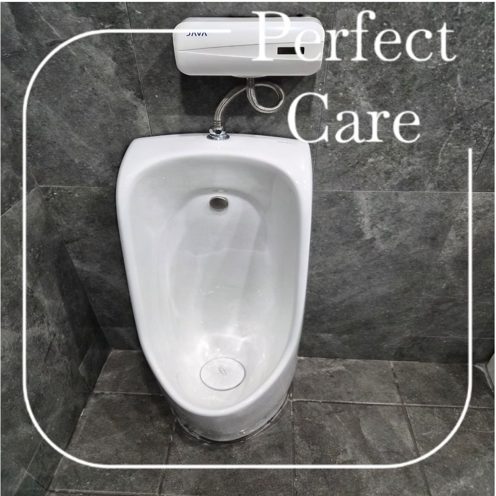
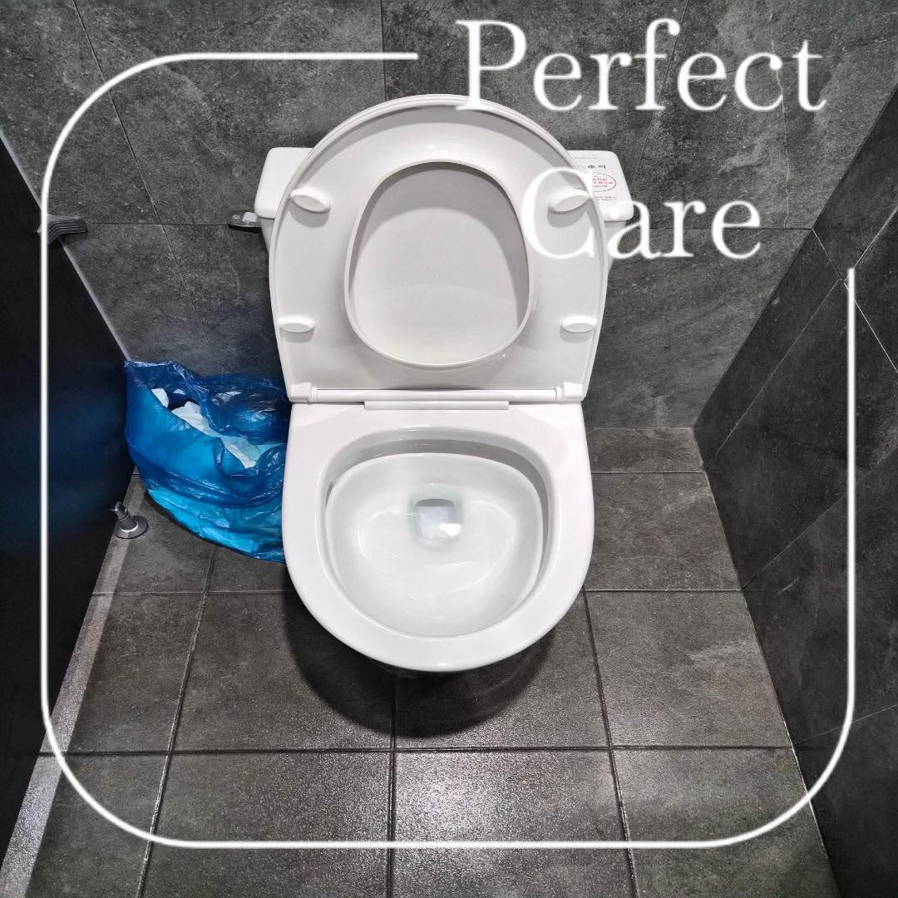
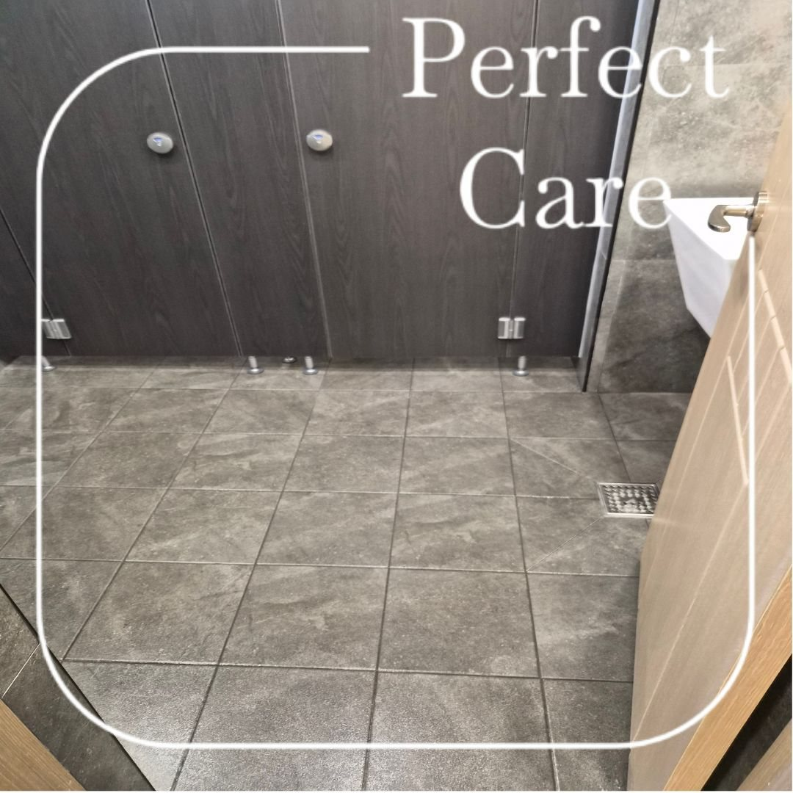
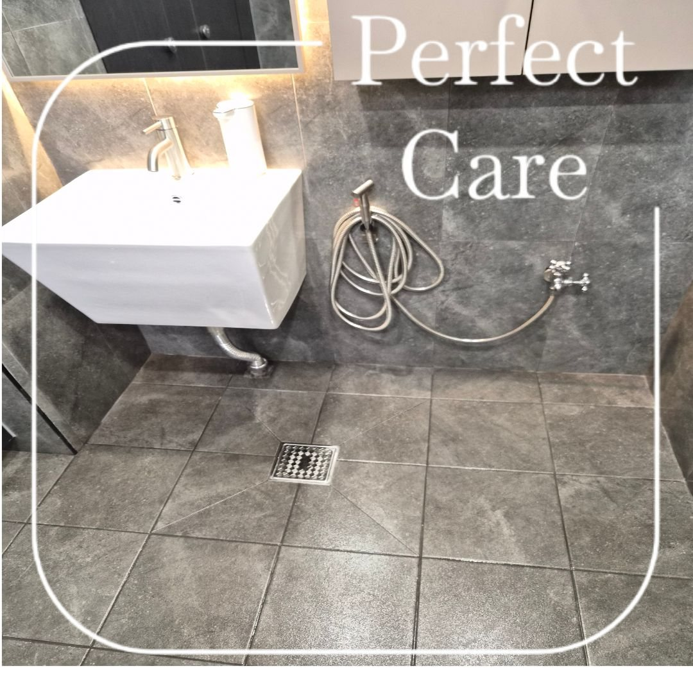
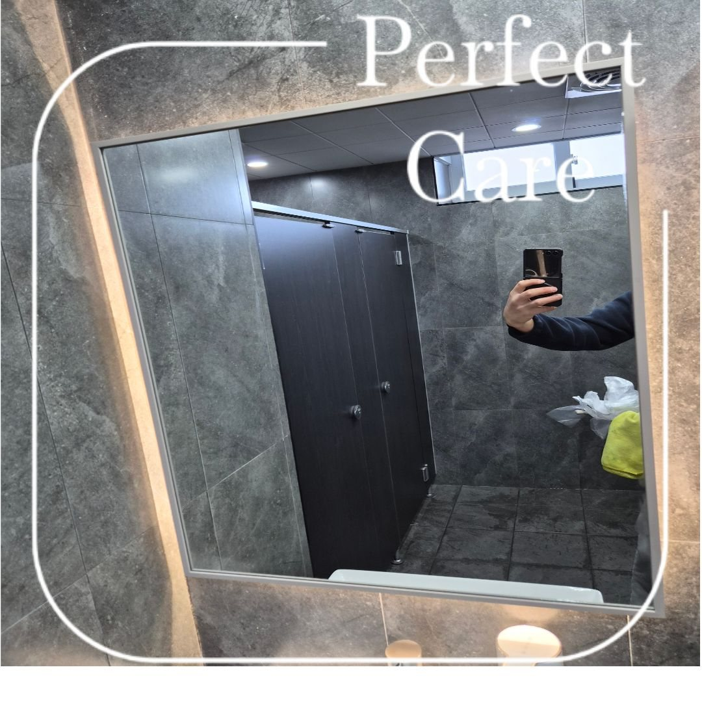
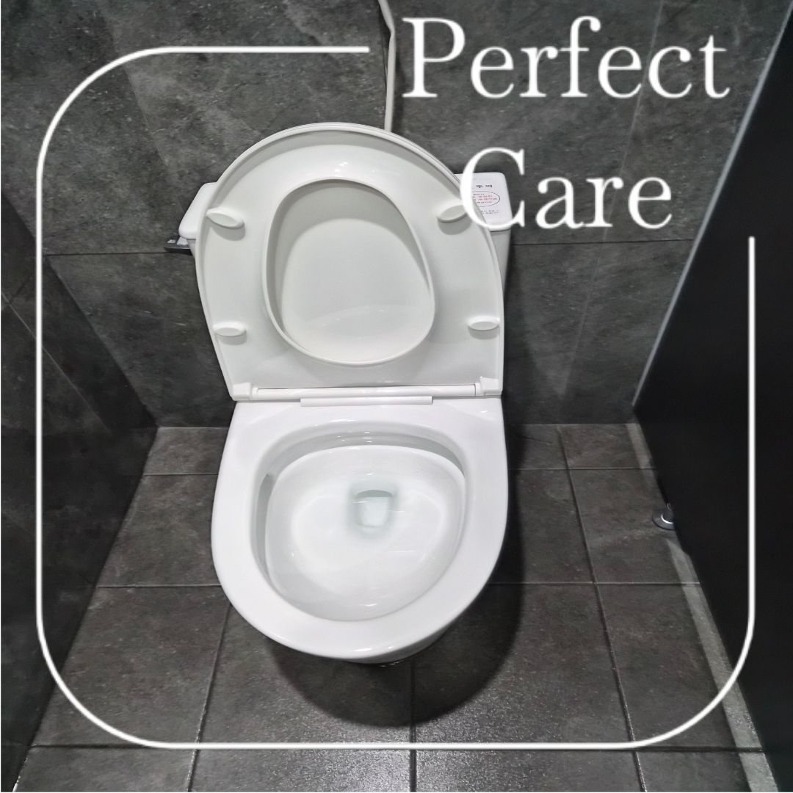
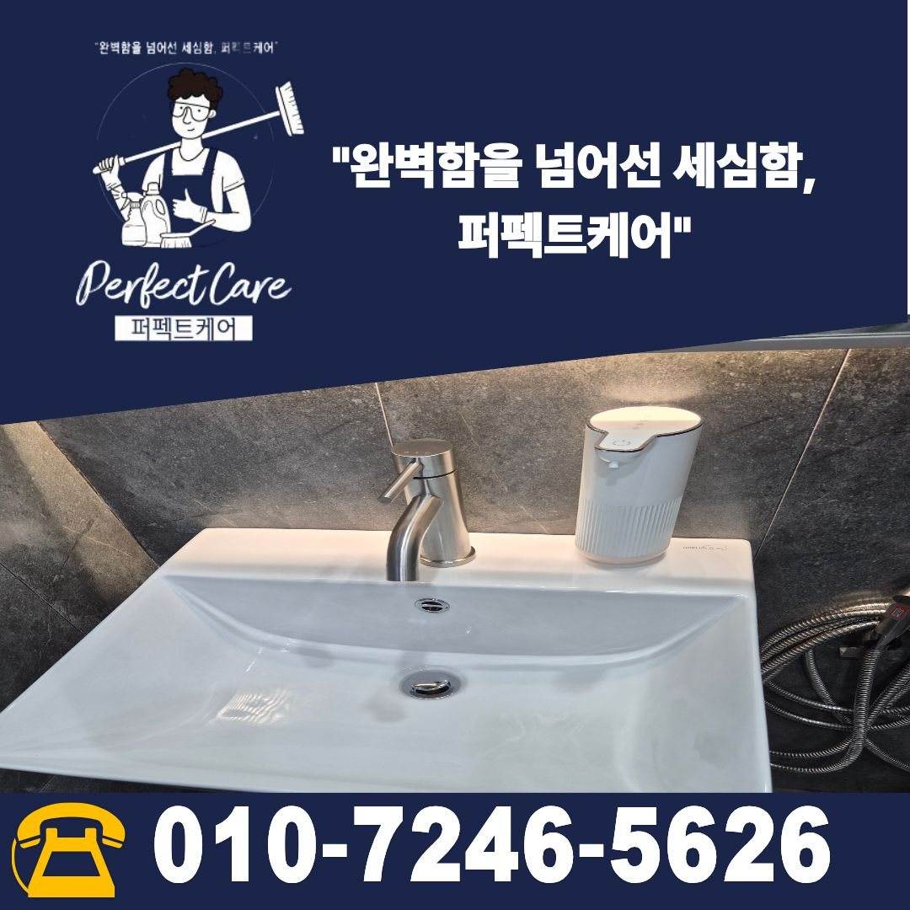

변기와 소변기, 세면대까지 공간별로 관리
위생기기는 사용하는 방식과 오염 형태가 달라 각각의 상태를 확인하면서 관리합니다. 변기 내부와 외부, 소변기 표면과 하부, 세면대와 수전 주변을 나누어 정리하고 마지막에 전체 상태를 다시 확인합니다.
- 변기 내부·외부 및 주변 바닥 관리
- 소변기 표면과 하부 오염 확인
- 세면대·수전·거울 표면 정리
- 바닥 타일·줄눈·배수구 주변 관리

김해 주촌에 위치한 기업체 화장실 정기청소 현장입니다. 변기·소변기·세면대·거울·바닥과 배수구 주변을 함께 관리해 직원과 방문객이 사용하는 공간을 쾌적하게 유지했습니다.
화장실은 변기와 소변기뿐 아니라 세면대, 거울, 바닥, 배수구, 칸막이 주변까지 관리 범위가 넓습니다. 특히 사업장 화장실은 이용 인원이 많아 작은 오염도 반복되기 때문에 정기적인 관리가 중요합니다.
이번 김해 주촌 현장도 위생기기와 바닥을 따로 나누어 확인하고, 손이 자주 닿는 부분과 물기가 남기 쉬운 구역까지 순서대로 정리했습니다.

위생기기는 사용하는 방식과 오염 형태가 달라 각각의 상태를 확인하면서 관리합니다. 변기 내부와 외부, 소변기 표면과 하부, 세면대와 수전 주변을 나누어 정리하고 마지막에 전체 상태를 다시 확인합니다.

화장실 바닥은 물기와 신발 오염이 반복적으로 들어오기 때문에 표면만 닦고 끝내기보다 모서리와 줄눈, 배수구 주변까지 함께 확인하는 것이 좋습니다.
정기청소에서는 현장 이용량과 오염 속도를 살펴 관리 횟수를 조정합니다. 퍼펙트케어는 사업장 규모, 직원 수, 방문객 수, 운영시간, 바닥 오염 정도와 관리 범위를 확인해 주 1회부터 주 6회까지 상담하고 있습니다.




퍼펙트케어는 김해 주촌을 포함해 김해 지역의 사무실, 공장, 학원, 병원, 상가 등 사업장 정기청소를 진행합니다. 화장실만 별도로 관리하거나 사무실 바닥, 공용부와 함께 묶어 관리하는 방식도 현장 범위에 맞춰 상담합니다.

현장 규모와 이용량, 관리 범위를 확인한 뒤 안내드립니다. 대량건도 문제없습니다.